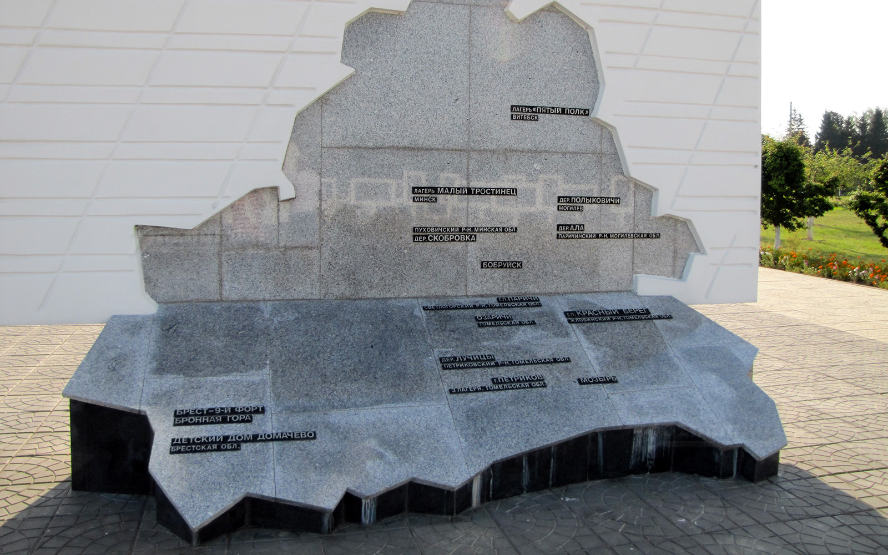
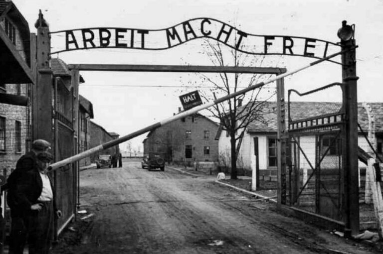
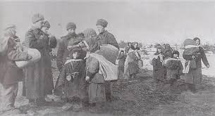
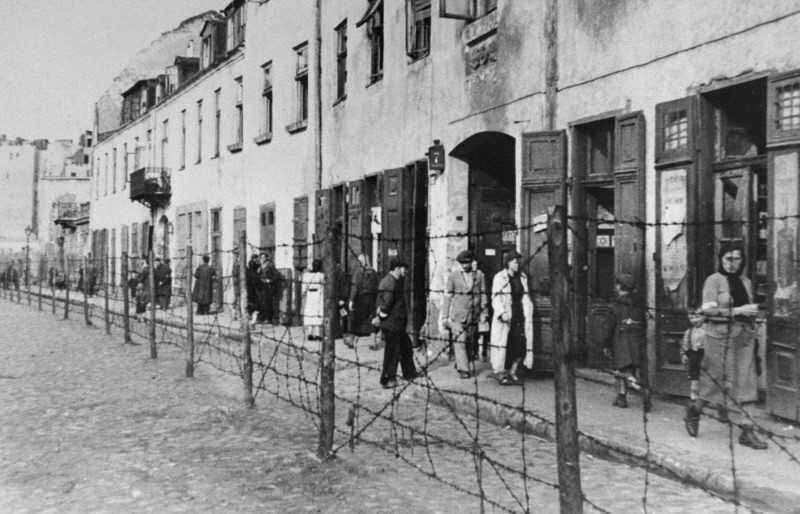

Описание различных типов лагерей, которые нацисты использовали для осуществления своей политики геноцида.
Концентрационные лагеря были основным элементом нацистской системы репрессий и уничтожения. Они использовались для содержания заключённых, включая политических противников, евреев, цыган и другие категории населения.
Здесь содержались люди в нечеловеческих условиях, многие из которых умирали от голода, болезней или казней.
Лагеря смерти были специально созданы для массового уничтожения людей. Самым известным из них был лагерь Освенцим, где было убито более миллиона человек.
Основной целью лагерей смерти было быстрое и систематическое истребление узников.
Трудовые лагеря предназначались для эксплуатации бесплатной рабочей силы. Заключённые выполняли тяжёлую физическую работу, часто при минимальном питании и ужасных условиях, что приводило к высокой смертности.
Гетто были особой формой лагерей, где евреи насильственно изолировались от остального населения. В условиях перенаселённости, недостатка пищи и лекарств, тысячи людей погибли.
Посмотрите видео, отсканировав QR-код: